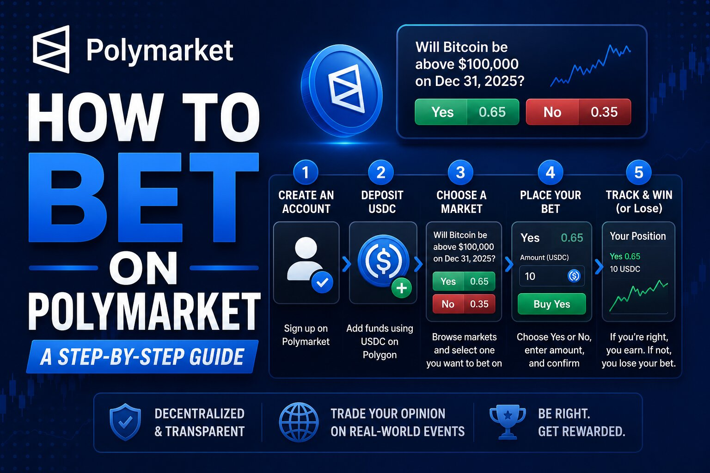

How to Bet on Polymarket: A Step-by-Step Guide

The short answer
To trade on Polymarket, you create an account, fund it, pick a market, and buy Yes or No shares on the outcome you believe in. The exact steps depend heavily on which version of Polymarket applies to you: the original global platform (crypto wallet, funded with USDC/pUSD, not available to US persons) or Polymarket US (a CFTC-regulated app that takes a debit card or bank deposit, currently rolling out sports-first). Figure out which one is actually yours to use before you do anything else — this is the single most common source of confusion for new traders.
Step 1: Work out which Polymarket you're using
If you're a US resident, you use Polymarket US via its dedicated app — the global crypto platform blocks US persons through KYC and geoblocking, a restriction dating back to a 2022 CFTC settlement. Polymarket US launched to all iOS users in May 2026 with an initial focus on sports markets, and the Android rollout has been expanding through the summer. If you're outside the US, you use the global platform at polymarket.com or its app, funded with crypto rather than a bank card.
Step 2: Create your account
On the global platform: download the app or visit polymarket.com, sign up with an email, and the platform generates a self-custodial wallet for you — you don't need to already own crypto or understand wallet mechanics beforehand. On Polymarket US: download the app from the App Store or Google Play, sign up with your phone number and email, and complete identity verification with a government ID, since this is a regulated exchange with KYC requirements. Both versions require you to be 18 or older, and Polymarket US additionally restricts access by state.
Step 3: Fund your account
Global Polymarket: you'll need USDC. Most users buy it on a crypto exchange and transfer it to their Polymarket wallet, though some deposit methods accept card funding that converts to USDC automatically. There's no minimum in a practical sense — you can start with as little as $5. Polymarket US: fund directly with a debit card, Apple Pay, or a linked bank account, the same way you'd fund a brokerage or sportsbook app — no crypto knowledge required. Some promotional periods have offered a matched trading bonus on a first deposit; read the terms, since bonus funds are typically non-withdrawable even though profits made with them usually are.
Step 4: Pick a market and read the rules first
Browse by category — politics, sports, crypto, culture, economics — or search for a specific question. Before you trade, open the market's resolution rules, usually listed alongside the order book. This matters more than it sounds: during the 2026 World Cup, for instance, the tournament-winner contract settles on who actually lifts the trophy regardless of extra time or penalties, but individual match contracts in the knockout rounds settle strictly on the 90-minute plus stoppage-time score — a trader holding the wrong contract type can lose a position even while their team keeps advancing. Every market has quirks like this; five minutes reading the rules avoids most of them.
Step 5: Place your trade
Pick Yes or No, enter how many shares (or how many dollars) you want to commit, and choose a market order (fills instantly at the best available price) or a limit order (fills only at a price you set). Confirm the trade. The price you see is the probability the market is currently pricing in — buying at $0.30 means you're paying 30 cents for a share that pays $1.00 if you're right and nothing if you're wrong.
Step 6: Manage or exit the position
You are not locked in until resolution. If the price moves in your favor, you can sell early to lock in a profit; if it moves against you, you can sell early to cut your losses rather than riding it to zero. This is the main practical difference from a traditional sportsbook bet, where you're stuck until the final whistle.
Step 7: Resolution and withdrawal
Once the event outcome is clear and the market resolves, winning shares automatically redeem for $1.00 each into your account balance, and losing shares become worthless. From there, withdrawing works differently by platform: on the global platform you send USDC out to an external wallet and off-ramp to fiat separately if you want cash in a bank account; on Polymarket US, withdrawals go back to your linked bank or card, closer to how a regulated brokerage handles it.
Common beginner mistakes
Trading a thin, low-liquidity market and getting stuck with a wide spread on the way out. Skipping the resolution rules and assuming a market means what the headline implies. Treating a high probability, like 85%, as a certainty rather than a market that still loses outright about one time in six. And — worth repeating — trying to use the wrong version of Polymarket for your location, which typically just gets you blocked at sign-up rather than costing you money, but wastes time.
A word on risk
Every position on Polymarket is all-or-nothing at resolution. Treat it the way you'd treat any speculative activity: only commit money you can afford to lose, size positions modestly while you're learning how a specific market category behaves, and don't let a single confident-looking probability talk you into overexposure.
Disclaimer: This post is for informational purposes only and is not financial, legal, or tax advice. Polymarket's global platform and Polymarket US are separate products with different eligibility rules, and availability varies by country and US state. Trading involves real risk of loss. Always confirm current eligibility, fees, and terms directly on polymarket.com or polymarket.us before depositing funds.